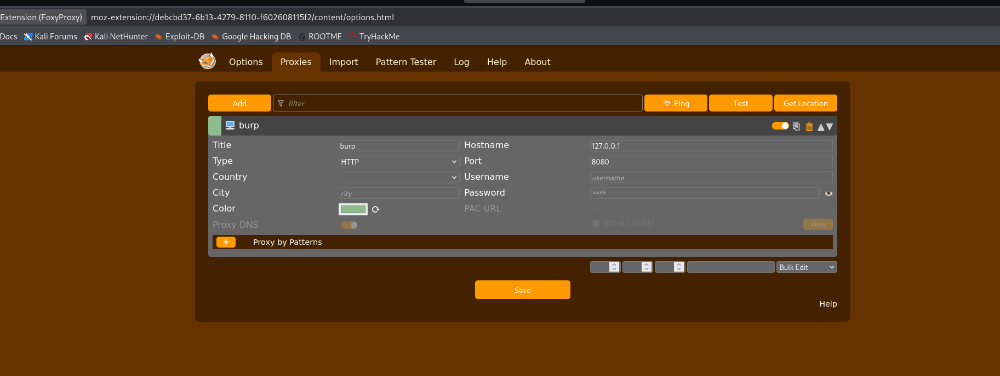

Burp Suite
C'est quoi ?
Burp Suite est une plateforme intégrée d'outils pour effectuer des tests de sécurité d'applications web. C'est l'outil de référence dans le domaine de l'audit de sécurité des applications HTTP.
Composants Clés de Burp Suite
Burp Suite est un ensemble d'outils interconnectés. Les trois composants que vous utiliserez le plus sont le Proxy, le Repeater et l'Intruder.
- Proxy (Le Cœur de Burp)
Le Proxy est le composant fondamental de Burp. Il agit comme un intermédiaire entre votre navigateur web et le serveur de l'application cible.
Fonctionnement : Il intercepte toutes les requêtes (envois) et réponses (réceptions) HTTP/S, vous permettant de les visualiser, modifier et manipuler avant qu'elles n'atteignent leur destination.
Utilisation : Pour commencer, vous devez configurer votre navigateur pour qu'il utilise le Proxy de Burp (par défaut, 127.0.0.1:8080).
J'utilise FoxyProxy une extension de firefox permettant de configurer un proxy :
Voici ma config :

| Fonction | Description |
|---|---|
| Intercept | Activation/Désactivation de l'interception des requêtes/réponses. |
| History | Journal de toutes les requêtes et réponses qui sont passées par le proxy, même si elles n'ont pas été interceptées. |
- Repeater (Répétiteur)
Le Repeater est conçu pour la modification manuelle et répétitive d'une seule requête HTTP.
Fonctionnement : Vous envoyez une requête du Proxy (ou de l'Historique) vers le Repeater, vous la modifiez (paramètres, en-têtes, etc.), et vous la renvoyez au serveur autant de fois que nécessaire.
Utilisation : Idéal pour tester l'impact d'une seule modification :
Vérification des injections SQL (SQLi) ou des scripts intersites (XSS).
Test de vulnérabilités d'autorisation ou de contournement de filtre.
- Intruder (Intrus)
L'Intruder est un outil puissant pour automatiser des attaques répétitives et personnalisables. Il prend une requête de base et la répète avec des listes de charges utiles (payloads) insérées à des points spécifiques.
Fonctionnement : Il permet de tester des milliers de combinaisons en très peu de temps.
Utilisation : Pour les attaques par force brute ou les tests d'injection systématiques.
| Type d'attaque | Description | Cas d'usage typique |
|---|---|---|
| Sniper | Une seule liste de charges utiles, insérées dans un seul emplacement. | Test de XSS avec 100 payloads différents. |
| Battering Ram | Une seule liste de charges utiles, insérée simultanément dans tous les emplacements marqués. | Attaque par dictionnaire sur un seul champ. |
| Pitchfork | Plusieurs listes de charges utiles (une par emplacement), avec une itération parallèle. | Nom d'utilisateur A avec mot de passe A, B avec B, etc. |
| Cluster Bomb | Plusieurs listes de charges utiles, avec une itération exhaustive de toutes les combinaisons. | Attaque par force brute Nom d'utilisateur/Mot de passe. |
| --- |
Absolument ! Voici un cours structuré sur Burp Suite, un outil essentiel pour les tests d'intrusion et la sécurité des applications web, rédigé en Markdown.
Introduction à Burp Suite
Burp Suite est une plateforme intégrée d'outils pour effectuer des tests de sécurité d'applications web. C'est l'outil de référence dans le domaine de l'audit de sécurité des applications HTTP.
Deux éditions principales
Édition Description Public cible Community Edition (Gratuite) Fonctionnalités de base, y compris le Proxy, l'Intruder limité, et Repeater. Débutants, étudiants, et usages simples. Professional Edition (Payante) Toutes les fonctionnalités, y compris le scanner automatisé, Intruder illimité, et de nombreux modules avancés. Professionnels de la sécurité (pénétrateurs), équipes de développement sécurisé.
Composants Clés de Burp Suite
Burp Suite est un ensemble d'outils interconnectés. Les trois composants que vous utiliserez le plus sont le Proxy, le Repeater et l'Intruder.
- Proxy (Le Cœur de Burp)
Le Proxy est le composant fondamental de Burp. Il agit comme un intermédiaire entre votre navigateur web et le serveur de l'application cible.
Fonctionnement : Il intercepte toutes les requêtes (envois) et réponses (réceptions) HTTP/S, vous permettant de les visualiser, modifier et manipuler avant qu'elles n'atteignent leur destination.
Utilisation : Pour commencer, vous devez configurer votre navigateur pour qu'il utilise le Proxy de Burp (par défaut, 127.0.0.1:8080).
Fonction Description Intercept Activation/Désactivation de l'interception des requêtes/réponses. History Journal de toutes les requêtes et réponses qui sont passées par le proxy, même si elles n'ont pas été interceptées.
- Repeater (Répétiteur)
Le Repeater est conçu pour la modification manuelle et répétitive d'une seule requête HTTP.
Fonctionnement : Vous envoyez une requête du Proxy (ou de l'Historique) vers le Repeater, vous la modifiez (paramètres, en-têtes, etc.), et vous la renvoyez au serveur autant de fois que nécessaire.
Utilisation : Idéal pour tester l'impact d'une seule modification :
Vérification des injections SQL (SQLi) ou des scripts intersites (XSS).
Test de vulnérabilités d'autorisation ou de contournement de filtre.
- Intruder (Intrus)
L'Intruder est un outil puissant pour automatiser des attaques répétitives et personnalisables. Il prend une requête de base et la répète avec des listes de charges utiles (payloads) insérées à des points spécifiques.
Fonctionnement : Il permet de tester des milliers de combinaisons en très peu de temps.
Utilisation : Pour les attaques par force brute ou les tests d'injection systématiques.
Type d'attaque Description Cas d'usage typique Sniper Une seule liste de charges utiles, insérées dans un seul emplacement. Test de XSS avec 100 payloads différents. Battering Ram Une seule liste de charges utiles, insérée simultanément dans tous les emplacements marqués. Attaque par dictionnaire sur un seul champ. Pitchfork Plusieurs listes de charges utiles (une par emplacement), avec une itération parallèle. Nom d'utilisateur A avec mot de passe A, B avec B, etc. Cluster Bomb Plusieurs listes de charges utiles, avec une itération exhaustive de toutes les combinaisons. Attaque par force brute Nom d'utilisateur/Mot de passe.
-
Scanner & Target (Professionnel)
Scanner : Automatise la recherche de vulnérabilités. Il rampe sur l'application et lance des tests d'injection pour identifier des failles courantes.
Target (Cible) : Fournit une vue d'ensemble hiérarchique du contenu de l'application et de toutes les requêtes et réponses associées. Il permet de définir la portée (scope) de votre test.